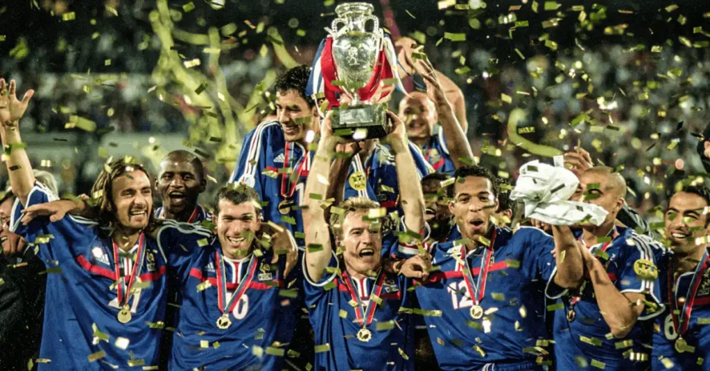

.png)
Though the first European Championship was held in 1960, the idea behind it is much older. It dates back to 1927, when the French Football Federation's administrator Henri Delaunay first proposed a pan-European football tournament. Despite the fact that he later became the first General Secretary of UEFA, Delaunay had already passed away by the time the tournament was officially started. In his honor, the tournament trophy was named after him.
The Henri Delaunay trophy contains a figure of a juggling boy on the back and the words "Championnat d'Europe,” and "Coupe Henri Delaunay" on the front. In 2008, it was remodeled to make it larger and more in line with UEFA's more modern trophies. The new trophy is made of sterling silver, weighs 8 kilograms (18 lb), and is 60 centimeters (24 in) tall. The names of the winning countries are now engraved on the back.
The two most successful nations in the tournament's history are Germany and Spain, with three titles each. Spain is the only nation to successfully defend its title, having done so in 2012. Germany has played the most matches (53), scored the most goals (75) and recorded the most victories (28). In 1984, France became the only nation to win all of its matches at a tournament (5 out of 5). In 1992, Denmark won the title with only two victories in five games.
Over the years, the European Champions has gotten more popular with TV audiences. In 2016, the total live audience for the expanded 51-match tournament grew to 2 billion viewers. When compared to Euro 2012, this amounted to an increase of 100 million. These totals were mostly raised by audiences in Brazil and China, where the 1300 GMT slot had a big impact. The final match between Portugal and France attracted 600 million people.
The euro 2024, will be the 17th edition of the UEFA European Championship, the quadrennial international football championship organised by UEFA for the men's national teams of its member associations. Germany will host the tournament, which is scheduled to take place from 14 June to 14 July 2024. It will be the third time that European Championship matches are played on German territory and the second time in reunified Germany as the former West Germany hosted the tournament of 1988, and four matches of the multi-national Euro 2020 were played in Munich. It will be the first time the competition is held in the region of former East Germany with Leipzig as a host city, as well as the first time that a reunified Germany served as a solo host nation. The tournament will return to its usual four-year cycle, after Euro 2020 was delayed to 2021 due to the COVID-19 pandemic. 24 teams will take part. Italy are the defending champions, having won the 2020 tournament after beating England on penalties in the final.
Germany's third largest metropolitan area, with a population of 3.7 million, Berlin has been the nation's capital since reunification in 1990, and when it comes to culture, sport, fashion, architecture and nightlife, it can give London, Paris or New York a run for their money.
Home to around 1.6 million people, Munich is Germany's third largest city. Due to its location close to the Alps and the nearby lakes, plus the generally laid-back lifestyle of its population, Munich has been labelled (with a sly wink) as the most northerly city in Italy.
A city with a history that stretches back over 2,000 years, Cologne sits on the River Rhine and is now home to over one million inhabitants. Locals are renowned for their cheerful, open-minded attitude, with that warmth evident during carnival season.
The third biggest European city which is not a national capital, Hamburg (population 1.8 million) has a world-renowned harbour, a rich cultural history and plenty of beautiful old buildings, with its reputation for nightlife making it something of a 'bucket list' city for tourists.
Stuttgart (population: 640,000) is a major industrial city and home to two of the most famous car manufacturers in the world, Mercedes and Porsche. The mild climate and rich soil of the Neckar Valley mean the surrounding area produces some great wines too..
In the heart of the industrial Ruhr district, Gelsenkirchen – with a population of 250,000 – was a city that owed its prosperity to coal mining and steelmaking (hence the nickname: 'City of a Thousand Fires'). It also produces great footballers, via local club Schalke 04, and has more to offer besides.
The most substantial city in Saxony, with a population of 600,000, Leipzig played a crucial role in German history. The peaceful, late-1989 Monday demonstrations in the East Germany city captured the mood as Germany moved toward reunification.
A global hub for commerce and finance, Frankfurt is home to one of the planet's busiest airports, German stock exchange and European Central Bank. Situated on the banks of the river Main, Germany's fifth largest city's distinct skyline has earned the nickname 'Mainhattan'.
Considered the cultural heart of the Ruhr region, Dortmund was known purely for coal, steel and beer 50 years ago, but has evolved into a major tech hub, with a state-of-the-art university and a lively cultural scene. Borussia Dortmund are pretty good too!
The capital of North Rhine-Westphalia has 650,000 inhabitants, with Düsseldorf offering a broad array of leisure and cultural activities, as well as a fabulous infrastructure – one of the reasons that the quality of life in this part of Germany is rated so highly.
.webp)
The ticket application phase opens on German Unity Day. The general public will be able to apply for tickets for certain matches. But no rush; the allocation of tickets will take place via lottery after the application window closes.
The final tournament draw will take place on 2 December 2023. A dedicated sales phase will start to allocate tickets for fans of the 21 (out of 24) qualified national teams.
Tickets go on sale to fans of the three teams that qualify through the UEFA EURO 2024 qualifying play-offs.
The UEFA EURO 2024 final tournament is scheduled to take place between 14 June and 14 July 2024 across ten German host cities. The opening match will be played in Munich while Berlin stages the final.